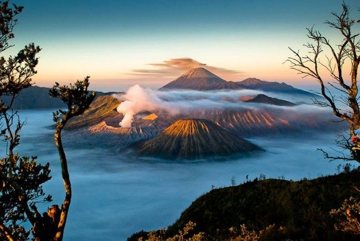

Gunung Bromo
Gunung Bromo, terletak di Jawa Timur.
Berikut adalah lokasi-lokasi menarik yang terkait dengan artikel sejarah alam kami:
Gunung Bromo, terletak di Jawa Timur.

Danau Toba, terletak di Sumatera Utara.
Candi Borobudur, terletak di Jawa Tengah.

Danau NTT, terletak di Nusa Tenggara Timur.
Gunung Kerinci, terletak di Sumatera.
Pantai Seribu, terletak di utara Jakarta.

Cagar Alam Kalimantan, terletak di Kalimantan.

Keanekaragaman hayati Komodo, terletak di Pulau Komodo.